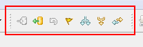

|
|
|
'SVN Toolbar' contains shortcuts to most recent used SVN facilities. To activate this toolbar refer to 'Window>Customize perspective...' menu item and on the 'Commands' tab check the 'SVN' group.
This is how 'SVN Toolbar' looks like:
Commit the resources to version control - activates the commit action for the selected resources.
Update the resources to version control - activates the update action for the selected resources.
Restore pristine working copy file - undoes all local changes.
Create tag - creates a tag.
Create branch - creates a branch.
Merge branches - opens merge wizard.
Switch project to a new URL - associates project with another repository location.